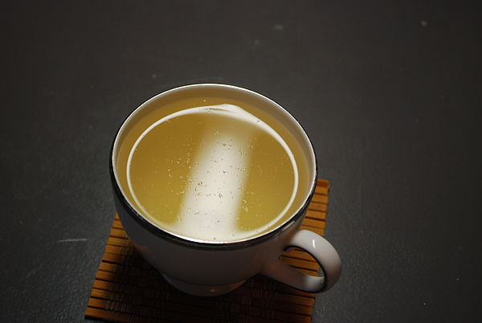

White Tea
White tea may refer to one of several styles of tea which generally feature young or minimally processed leaves of the Camellia sinensis plant.
Currently there is no generally accepted definition of white tea and very little international agreement; some sources use the term to refer to tea that is merely dried with no additional processing, some to tea made from the buds and immature tea leaves picked shortly before the buds have fully opened and allowed to wither and dry in natural sun, while others include tea buds and very young leaves which have been steamed or fired before drying, Most definitions agree, however, that white tea is not rolled or oxidized, resulting in a flavour characterized as "lighter" than green or traditional black teas.
In spite of its name, brewed white tea is pale yellow. Its name derives from the fine silvery-white hairs on the unopened buds of the tea plant, which give the plant a whitish appearance. The unopened buds are used for some types of white tea.
It is harvested primarily in China, mostly in the Fujian province, but more recently produced in Eastern Nepal, Taiwan, Northern Thailand, Galle (Southern Sri Lanka) and India.